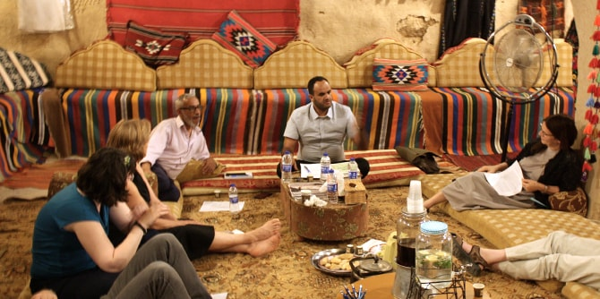
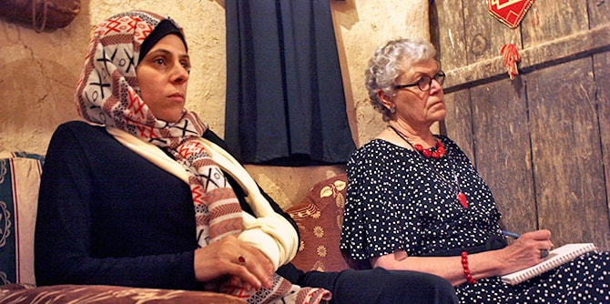

המפגש החמישי של "סלון נגב" התקיים בארמון החוריה בלקייה – מרכז מבקרים המציג את התרבות והמסורת של החברה הערבית-הבדואית בנגב. המפגש התקיים בסימן של שותפות ושל יחד, מתוך חזון לחיזוקו של מרחב משותף בנגב המחבר בין קהילות שונות ומאפשר גיוון חברתי ותרבותי.
נושא הגג המקשר בין מפגשי הפורום השנה הוא צל ומדבר. המפגש הנוכחי, שהתקיים במהלך חודש הרמדאן, נפתח במעגל שיח ובו דנו המשתתפים על המשמעות של צום עבורם ועל הקשר שבין צום לצל בחיים במדבר, כבסיס לשיח פתוח בין המשתתפים המגיעים מקהילות הנגב השונות.

לאחר סעודת איפטאר משותפת התכנסו המשתתפים ללימוד בהובלת קאסם אלצראיעה, חבר סגל מרכז מנדל למנהיגות בנגב, היסטוריון החוקר דת ומדינה במזרח התיכון, ובפרט היסטוריה של המשפט השבטי של החברה הערבית-הבדואית בנגב. על בסיס קריאה בצוותא של טקסט מאת אבן-ח'לדון, שוחח אלצראיעה עם הקבוצה על האופן שבו חברות אנושיות עוברות מחיי המדבר לחיים בעיר, והציג מודל של התפתחות תרבויות סביב נהרות, לעומת כאלה שצמחו במרחבים מדבריים. הטקסט היווה בסיס לשיח על ההבדלים בין תרבויות אלו כמקורות עיקריים להשראה וליצירה של האדם.
סדרת המפגשים, בהובלתן של
ד"ר רות קלדרון, חברת סגל אורחת במרכז מנדל למנהיגות בנגב, וד"ר עדי ניר שגיא, מנהלת המרכז, היא פורום של מנהיגים ודמויות מפתח מאזור הנגב המתכנס ללימוד ולהשראה על תרבות ויצירה מקומית. למפגש הגיעו דמויות מפתח מובילות מהנגב הפועלות ברשויות המקומיות, באקדמיה, במוסדות ציבור ובגופי תרבות בתחומי היצירה והאמנות המקומית.

{kind=link}
{kind=link}